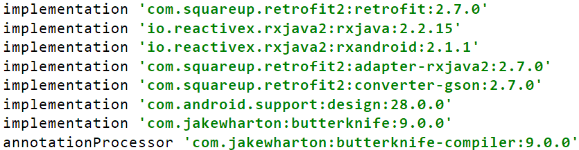
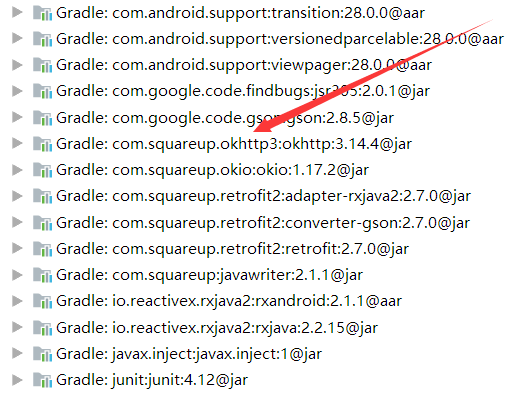
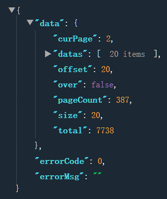
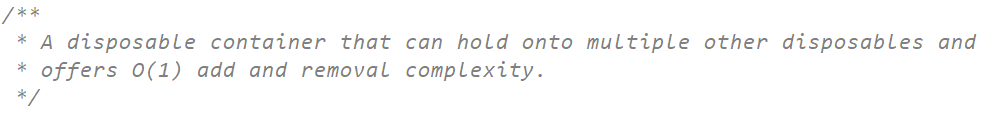

一、前言
说起Retrofit与RxJava的封装就不得不说起MVP，由于自己老是记不住搭建MVP的过程，自己理解的深度不够加上感觉每次写项目都要重复一遍搭建过程，所以记录一次，加深理解。
二、什么是MVP
网络上有很多讲解MVP的文章，各有千秋，其实这只是一个开发的模式，主要是为了简化开发中的层级与代码的耦合。各自有各自的理解，并没有明确的定义。在个人看来，其实就是将以前在活动的做的事进行分层，类似于后端开发中MVC模式划分的层级。MVP模式将活动、碎片等作为V层（View）只作为展示数据的层级，而P层（Presenter）作为V层与P层中间层级，负责收集V层的数据进行处理及从M层（Model）获取数据传递给V层。然而目前来看普通的App主要进行网络请求获取数据，或者通过一些工具类就能进行数据存储，所以个人感觉其实M层的作用十分微弱，进而P层就显得尤为重要了。
MVP的优点
- 层次清晰，解耦
MVP的缺点
- 造成P层臃肿
- 代码冗余
接下来进行整个项目的搭建。
三、编写基础接口
1、接口的作用
为什么要使用接口？在MVP中接口是十分重要的东西，最顶层的接口不仅约束了其子接口，还为代码的复用提供了有效的作用，总的来说在MVP中的编程是面向接口的编程。这里编写了IBaseView、IBasePresenter作为V层、P层的顶级接口。
public interface IBaseView {
void showToastMsg(String msg);
void showEmptyView();
void showErrorView();
void showLoadingView();
void showNoNetWorkView();
void showSuccessView();
}public interface IBasePresenter<T extends IBaseView> {
void attachView(T view);
void detachView();
}2、添加依赖
说起MVP基础的搭建就一定少不了Rx系列与Retrofit了，截至2019年12月22日，Retrofit2的最新版本为 2.7.0，RxJava2的最新版本为2.2.15，RxAndroid的版本为2.1.1，整个项目主要添加的依赖如下：

有很多博客说还要添加OkHttp3的依赖，由于Retrofit2本就是根据OkHttp3来搭建的，所以可以看到依赖里其实有OkHttp3的依赖的，不必再进行二次添加了。

四、编写BaseActivity与BaseFragment
public abstract class BaseActivity<T extends IBasePresenter> extends AppCompatActivity implements IBaseView {
protected T mPresenter;
private Toast mToast;
private AbstractUiLoader mUiLoader;
private Unbinder mUnBinder;
@Override
protected void onCreate(@Nullable Bundle savedInstanceState) {
super.onCreate(savedInstanceState);
if (mUiLoader == null) {
mUiLoader = new AbstractUiLoader(this) {
@Override
public View getSuccessView(ViewGroup container) {
return LayoutInflater.from(getContext()).inflate(getLayoutId(), container, false);
}
};
}
mUiLoader.setStatus(AbstractUiLoader.Status.SUCCESS);
setContentView(mUiLoader);
mUnBinder = ButterKnife.bind(this);
initEvent();
}
protected abstract int getLayoutId();
protected abstract void initEvent();
@Override
public void showToastMsg(String msg) {
if (mToast == null) {
mToast = Toast.makeText(this, msg, Toast.LENGTH_SHORT);
mToast.show();
}else {
mToast.setText(msg);
mToast.show();
}
}
@Override
protected void onDestroy() {
if (mUnBinder != null) {
mUnBinder.unbind();
}
if (mPresenter != null) {
mPresenter.detachView();
mPresenter = null;
}
super.onDestroy();
}
//实现IBaseView中的方法，使用mUiLoader进行视图切换
}这部分代码其实就是对Activity的一些通用方法的封装，BaseFragment同理。AbstractUiLoader是一个视图切换类继承至FrameLayout主要是对布局视图的统一切换，详情点击 这儿 。
五、编写Retrofit2基础
这里使用 玩Android 开放API 的首页文章进行举例。由于网站返回的json具有统一的格式，所以需要写一个基础的数据实体类：BaseData，用来接收数据
public class BaseData<T> {
private T data;
private int errorCode;
private String errorMsg;
//get和set方法
}通过示例可以看出首页的一级bean为下图所示，所以再定义一个PageBean

public class PageBean {
private int curPage;
private List<ArticleBean> datas;
private int offset;
private boolean over;
private int pageCount;
private int size;
private int total;
//get和set方法
}接着定义文章的bean
public class ArticleBean {
private String apkLink;
private int audit;
private String author;
private int chapterId;
private String chapterName;
private boolean collect;
private int courseId;
private String desc;
private String envelopePic;
//get和set方法和剩余的字段
}最后写一个Retrofit2的接口
public interface Api {
/**
* 获取主页文章
* @return Observable<BaseData<PageBean>>
*/
@GET("article/list/{pageNum}/json")
Observable<BaseData<PageBean>> getHomeArticleList(@Path("pageNum") int pageNum);
}再编写一个Retrofit的工具类用于获取Api的实例
public class RetrofitUtil {
private static Api instance;
/**
* 超时时间
*/
private static final int TIME_OUT = 10;
public static Api getApi(){
if (instance == null) {
String baseUrl = "https://www.wanandroid.com/";
OkHttpClient.Builder builder = new OkHttpClient.Builder();
builder.connectTimeout(TIME_OUT, TimeUnit.SECONDS)
.readTimeout(TIME_OUT, TimeUnit.SECONDS);
instance = new Retrofit.Builder().baseUrl(baseUrl)
.client(builder.build())
.addCallAdapterFactory(RxJava2CallAdapterFactory.create())
.addConverterFactory(GsonConverterFactory.create()).build().create(Api.class);
}
return instance;
}
}到此为止，我们就将Retrofit的基础部分编写完成，接着完成RxJava部分。
六、编写RxJava的基础
在MVP中，RxJava主要用于P层进行请求，由于P层是一个普通的Java类，所以要防止视图销毁时P层依然还在进行网络请求，后回调View造成的内存泄露。为什么要编写这个基础的observer呐？因为在订阅的时候一般用的是匿名内部类，而主要使用的方法基本上就只有void onNext(@NonNull T t)这一个方法，所以在这里对它进行封装。
public abstract class BaseObserver<T> extends ResourceObserver<BaseData<T>> {
private IBaseView mView;
public BaseObserver(IBaseView view){
this.mView = view;
}
@Override
protected void onStart() {
mView.showLoadingView();
super.onStart();
}
@Override
public void onNext(BaseData<T> baseData) {
if (baseData.getErrorCode() == 0){
onSuccess(baseData.getData());
mView.showSuccessView();
}else {
mView.showErrorView();
}
}
@Override
public void onError(Throwable e) {
onFailed(e);
mView.showToastMsg(e.getMessage());
}
@Override
public void onComplete() {
}
public abstract void onSuccess(T data);
public void onFailed(Throwable e){
}
}这里选择继承了ResourceObserver类，进行封装。为什么在构造方法中传入一个IBaseView，主要在于每次获取json后，都能通过code判断是否成功、失败、错误等，所以直接将这些放入Observer中，减少冗余代码。
七、编写BasePresenter层
有了上面的基础，就可以来编写最重要的P层了，在P层中使用RxJava进行线程切换以及与Retrofit进行网络请求，最重要的就是对网络请求与页面回调之间的控制，有著名的 RxLifecycle 能对其进行管理。这里选择自己手动管理。通过CompositeDisposable类的说明可以看出，这个类是为了管理资源的容器，所以可以在BasePresenter的子类中使用subscribeWith()订阅观察对象返回一个观察者加入到CompositeDisposable容器中，页面销毁时使用该对象销毁正在进行的请求。

public abstract class BasePresenter<T extends IBaseView> implements IBasePresenter<T> {
protected T mView;
private CompositeDisposable mCompositeDisposable;
protected Api mApi = RetrofitUtil.getApi();
@Override
public void attachView(T view) {
this.mView = view;
}
@Override
public void detachView() {
if (mView != null) {
mView = null;
}
if (mCompositeDisposable != null) {
mCompositeDisposable.clear();
}
if (mApi != null){
mApi = null;
}
}
protected void addRequest(Disposable disposable){
if (mCompositeDisposable == null) {
mCompositeDisposable = new CompositeDisposable();
}
mCompositeDisposable.add(disposable);
}
}八、实战
在实际中，由于面向接口编程所以，每个页面都会有View、Presenter接口为了方便管理就有了Contract接口
public interface MainContract {
interface View extends IBaseView {
void showArticleList(List<ArticleBean> articleList);
}
interface Presenter extends IBasePresenter<View> {
void getHomeArticle();
}
}活动（V层）：
public class MainActivity extends BaseActivity<MainContract.Presenter> implements MainContract.View {
@BindView(R.id.rv_main)
RecyclerView mMainRv;
private MainRvAdapter mAdapter;
@Override
protected int getLayoutId() {
return R.layout.activity_main;
}
@Override
protected void initEvent() {
mPresenter = new MainPresenter();
mPresenter.attachView(this);
mMainRv.setLayoutManager(new LinearLayoutManager(this));
mAdapter = new MainRvAdapter();
mMainRv.setAdapter(mAdapter);
mMainRv.addItemDecoration(new DividerItemDecoration(this, DividerItemDecoration.VERTICAL));
mPresenter.getHomeArticle();
}
@Override
public void showArticleList(List<ArticleBean> articleList) {
mAdapter.setNewData(articleList);
}
}P层：
public class MainPresenter extends BasePresenter<MainContract.View> implements MainContract.Presenter{
@Override
public void getHomeArticle() {
addRequest(mApi.getHomeArticleList(1)
.compose(RxUtil.schedulerTransformer())
.subscribeWith(new BaseObserver<PageBean>(mView) {
@Override
public void onSuccess(PageBean data) {
mView.showArticleList(data.getDatas());
}}));
}
}整个项目的源码点 这儿 。